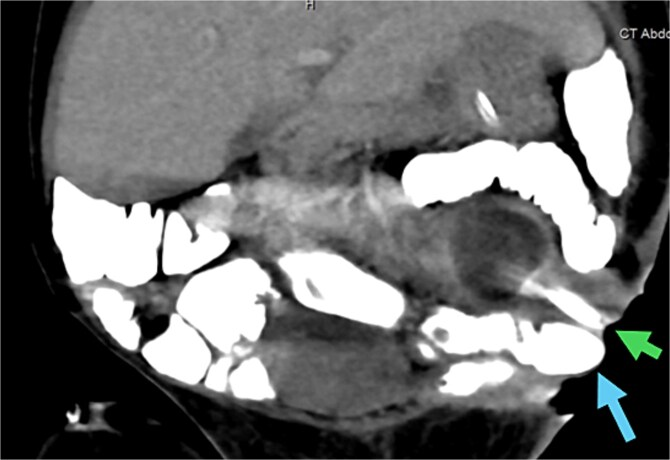
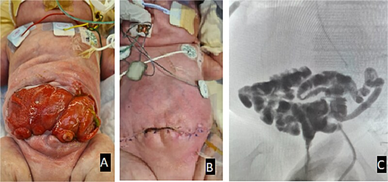
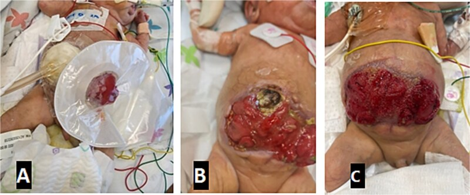
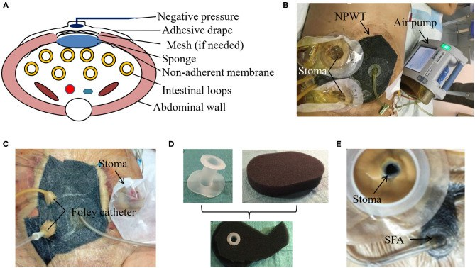

1625 — Rò ruột–khí quyển ở trẻ / Enteroatmospheric fistula (EAF) after open abdomen
Tags: pattern:ro pattern:bung-mo vung:thanh-bung vung:ruot-non score:Bjorck protocol:CT-bung-can-quang protocol:NPWT
Mức chắc chắn (certainty): tổng hợp y văn (literature synthesis) — số liệu dịch tễ/ngưỡng lấy từ 1 nghiên cứu thuần tập lớn có đối chứng theo điểm xu hướng (Schaaf S et al., Br J Surg 2023, PMC10638526), 1 tổng quan về xử lý rò bằng NPWT (Pepe G et al., J Clin Med 2024, PMC10932196), 1 tổng quan kỹ thuật cách ly rò (Huang J et al., Front Surg 2020, PMC7855170); phần đặc thù nhi khoa dựa trên 1 ca nguyên văn sơ sinh cực non (Alhalabi R et al., J Surg Case Rep 2025, PMC12319319) — ca này không điển hình về mức độ nặng (bụng mở 6 tháng), đã ghi chú phản biện. Số nào nguồn không nêu thì ghi "chưa rõ", không bịa.
1. Tổng quan bệnh học – cơ chế hình ảnh
- Định nghĩa tạo ra mọi thứ còn lại của bài: rò ruột–khí quyển (enteroatmospheric fistula — EAF) là thông thương giữa lòng ruột và môi trường không khí qua một bụng còn mở (laparostomy), KHÔNG có đường hầm qua da và KHÔNG có biểu mô hóa — niêm mạc lộn ra như "môi" dính trực tiếp lên mặt bụng. Vì vậy EAF không thể tự liền theo cơ chế của rò ruột–da (enterocutaneous fistula — ECF); đây là lý do về mặt giải phẫu, không phải về mặt điều trị.
- Ngưỡng định lượng phân biệt EAF với ECF (cửa 1 của Argon): ECF đóng kín tự phát 19,9–81,4%; trong số đó 90% đóng trong tháng đầu sau khi kiểm soát nhiễm trùng, thêm 10% trong tháng thứ hai, và KHÔNG ca nào đóng sau 2 tháng (Pepe G et al. 2024). EAF nằm ngoài quy luật này → chờ tự liền ở EAF là mất thời gian và mất ruột.
- Dịch tễ định lượng: trong sổ bộ EHS Open Abdomen Registry (1009 bệnh nhân, 2015–2022) có 71 EAF = 7,0%; y văn khác ghi 3–19% (Schaaf S et al. 2023). Thời gian từ lúc bắt đầu bụng mở đến khi hình thành EAF: 23,2 ± 20,3 ngày — nghĩa là EAF là biến cố của tuần thứ 2–6, không phải của ngày hậu phẫu đầu.
- TẠI SAO phòng được (và vì sao nó là lỗi kỹ thuật, không phải "xui"): màng bảo vệ tạng (visceral protective layer — VPL, film đục lỗ trơ) đặt giữa ruột và băng/mesh làm giảm EAF một nửa: 4,1% vs 10,7% (chưa ghép cặp) và 6,1% vs 16,3% (sau ghép cặp), OR 0,36 (95% CI 0,21–0,60); sau ghép cặp OR 0,34 (0,17–0,68). Kỹ thuật đóng động (dynamic fascial traction) cho 4,3% so với 11,9% ở đóng tĩnh (số gộp dẫn trong Schaaf S et al. 2023). Ruột tiếp xúc trực tiếp với bọt biển/mesh ẩm + áp lực âm là nguyên nhân cơ học của lỗ rò.
- TẠI SAO vẫn còn rò dù đã che chắn: 55% EAF (39/71) xảy ra ở nhóm đóng cân THẤT BẠI — bụng mở càng lâu, ruột càng phù, càng dễ dính vào vật liệu. Tỉ lệ đóng cân chung chỉ 55,6% (nhóm VPL 76,0% vs 54,5%, P = 0,001). Bài học thực hành: EAF là dấu hiệu của một bụng mở bị kéo dài.
- TẠI SAO nguy hiểm không nằm ở "mất dịch" mà ở nhiễm trùng: 77% tử vong của rò ruột do nhiễm trùng huyết (Pepe G et al. 2024); tử vong chung của rò ruột còn 15–30% dù đã có nuôi ăn tĩnh mạch và hồi sức. Dịch ruột đổ lên mặt bụng tự tiêu hóa da, duy trì nhiễm trùng tại chỗ và là nguồn nhiễm khuẩn huyết liên tục.
- TẠI SAO trẻ em khác người lớn — 3 điểm cơ học:
- Dự trữ ruột: trẻ sơ sinh chỉ có ~200–250 cm ruột non; mất 1 cm ở trẻ non tháng tương đương mất nhiều hơn ở người lớn → nguy cơ hội chứng ruột ngắn. Ca nguyên văn kết thúc với 50 cm ruột non còn lại nhưng giữ nguyên van hồi–manh tràng và toàn bộ đại tràng — đây chính là phần "đệm" giúp trẻ đạt tự chủ đường tiêu hóa.
- Thành bụng mỏng, áp lực thấp: mức NPWT phải hạ theo cân nặng (−20 mmHg ở sơ sinh < 2 kg, −50 nhũ nhi, −75 trẻ lớn — theo bài 688); dùng mức người lớn −125 mmHg sẽ làm hoại tử thành bụng.
- Nhu cầu năng lượng cao: vết mở lớn + nhiễm trùng làm tăng nhu cầu, trong khi đường vào tĩnh mạch dần cạn → bệnh gan do nuôi ăn tĩnh mạch (PNALD/IFALD) là biến chứng thường gặp (ca nguyên văn có PNALD nhẹ sau ~7 tháng TPN).
- Vai trò của hình ảnh (vì sao bài này nằm trong thư viện CĐHA): hình ảnh trả lời 5 câu hỏi mà lâm sàng không trả lời được: (1) bao nhiêu lỗ rò (nhiều lỗ "dính thành một tấm" là bẫy — ca nguyên văn có ≥ 2 ECF + 1 rò ruột–ruột sau đó), (2) lỗ rò cách góc hỗng–tá tràng bao nhiêu cm (quyết định còn đủ ruột hấp thu hay không), (3) chiều dài ruột liên tục còn lại, (4) có tắc nghẽn/túi mủ đoạn xa (rò không bao giờ đóng nếu còn tắc xa), (5) có thông thương tự do vào ổ phúc mạc (dẫn lưu chưa đủ). Đây là bản đồ mổ, không phải "chụp cho đủ".
2. Mẫu hình + chẩn đoán phân biệt theo vị trí và lưu lượng (Gamut)
Trục A — theo lưu lượng dịch rò (dùng để quyết định nuôi ăn và bù dịch; ngưỡng của Pepe G et al. 2024):
| Mức | Lưu lượng | Hệ quả thực hành |
|---|---|---|
| Thấp | < 200 mL/ngày | Có thể nuôi ăn đường tiêu hóa gần như đầy đủ; rò dễ "khô" |
| Trung bình | 200–500 mL/ngày | Cần bù dịch–điện giải, cân nhắc tái hấp thu dịch rò |
| Cao | > 500 mL/ngày | Rò hỗng tràng gần; mất Na⁺/K⁺/HCO₃⁻, suy thận trước thận, loét da; gần như bắt buộc TPN ± bơm lại dịch (chyme reinfusion) |
Trục B — theo vị trí trên ống tiêu hóa (vì vị trí quyết định "còn bao nhiêu ruột để hấp thu"):
- Hỗng tràng gần (cách góc hỗng–tá tràng < 30 cm): lưu lượng cao nhất, dịch tiêu hóa enzyme hoạt tính mạnh nhất, nguy cơ suy dinh dưỡng nặng nhất — đây là nhóm phải bơm lại dịch rò (fistuloclysis/reinfusion) để tận dụng niêm mạc đoạn xa đang "ngủ".
- Hồi tràng: lưu lượng trung bình; nguy cơ thiếu B12 và sỏi mật về sau.
- Đại tràng: lưu lượng thấp hơn, cảm giác "dễ chịu" hơn — nhưng nhiễm trùng ổ bụng nặng nhất vì đậm độ vi khuẩn cao; đừng đánh giá độ nặng theo lượng dịch.
Trục C — theo hình thái: một lỗ / nhiều lỗ rời / "tấm rò" khổng lồ (giant fistula: nhiều quai ruột cùng lộ và cùng rò — ca nguyên văn) / rò nông (chỉ ở lớp cân) vs rò sâu (ăn vào quai ruột nằm sâu trong ổ bụng).
Bảng gamut chẩn đoán phân biệt tại giường bụng mở:
flowchart TD
A[Bụng mở + dịch ruột trên mặt bụng] --> B{Có niêm mạc lộn ra như môi?}
B -->|Có| C[EAF — không có đường hầm, không biểu mô hóa]
B -->|Không| D{Có đường hầm qua da / da liền quanh lỗ?}
D -->|Có| E[ECF — có thể tự liền 19,9–81,4%]
D -->|Không| F[Vết thương tiết dịch / rò nước tiểu / rò mật]
C --> G[Nhiều lỗ? Tấm rò?]
G --> H[Chụp CT có cản quang uống + channelogram để VẼ BẢN ĐỒ]
Mnemonic "SNAP" (thứ tự xử lý, Pepe G et al. 2024): Skin & Sepsis (da + nhiễm trùng) → Nutrition (dinh dưỡng) → Anatomy (giải phẫu — chính là phần hình ảnh) → Procedure (thủ thuật/mổ). Sai thứ tự này là lý do phổ biến nhất khiến mổ tái tạo thất bại: mổ trên bụng còn nhiễm trùng = mở lại lỗ rò.
3. Bảng so sánh phân biệt (ma trận đối chiếu)
| Thực thể (entity) | Hình ảnh / lâm sàng điển hình | Chốt vào (rule-in) | Chốt loại (rule-out) | Gợi ý xác nhận |
|---|---|---|---|---|
| EAF (rò ruột–khí quyển) | Niêm mạc lộn ra dính mặt bụng, không có đường hầm; CT có cản quang uống: thuốc đi từ lòng ruột thẳng ra ngoài qua khuyết thành bụng | Thấy niêm mạc ruột trên mặt bụng + thuốc cản quang ra tự do | Có đường hầm qua da hoặc da liền kín quanh lỗ → là ECF | CT bụng có cản quang uống; channelogram qua lỗ rò |
| ECF (rò ruột–da) | Lỗ trên da có đường hầm, da liền xung quanh; có thể đóng tự phát | Đường hầm ≥ 2 cm + khuyết ruột < 1 cm (yếu tố thuận lợi đóng tự phát) | Niêm mạc lộn trực tiếp, không hầm → EAF | Chụp đường hầm bằng thuốc tan trong nước |
| Bục miệng nối + áp-xe tồn dư | Sốt, đau, tăng bạch cầu; CT: tụ dịch–khí quanh miệng nối, thuốc thoát vào ổ dịch chứ không ra da | Túi dịch quanh miệng nối + khí trong ổ | Chỉ có quai ruột lộ, không có ổ dịch → chưa phải rò | CT có cản quang tĩnh mạch + uống; siêu âm đầu dò |
| Rò ruột–ruột (enteroenteric) | Không có dịch ra ngoài; CT: quai ruột dính, thuốc sang quai bên cạnh, thành dày | Thuốc cản quang đi tắt sang quai khác không qua đoạn ruột bình thường | Có lỗ ra da → EAF/ECF | CT có cản quang uống thì muộn |
| Quai ruột lộ nhưng CHƯA rò | Ruột lộ, mặt thanh mạc bóng ẩm, không có lỗ, không có dịch ruột | Không thấy lỗ + không có dịch tiêu hóa | Có lỗ + dịch ruột → EAF | Theo dõi 24–48 giờ; CT chỉ khi nghi tắc/rò |
| Tắc ruột đoạn xa (làm rò không lành) | CT: quai giãn trên chỗ hẹp, "điểm chuyển tiếp", không có thuốc qua đoạn xa | Điểm chuyển tiếp + quai giãn trước đó | Thuốc xuống tới trực tràng → không tắc | CT 3 thì; loopogram đường xuống |

Trẻ 23 tuần/560 g sau hoại tử ruột non: CT có cản quang uống thấy hai đường rò ruột–da — mũi tên xanh lá: rò thông với ruột non; mũi tên xanh dương: rò thông với đại tràng sigma đoạn gần. Nguồn: Alhalabi R et al., J Surg Case Rep 2025 (PMC12319319), Fig. 6, CC BY-NC 4.0.Đọc chuẩn ba câu hỏi khi nhìn phim có rò
- Thuốc đi tới đâu? Ra da = rò; vào ổ dịch = bục miệng nối kín; sang quai khác = rò ruột–ruột; không tới trực tràng = tắc đoạn xa (rò sẽ không lành).
- Còn bao nhiêu ruột liên tục? Đo từ góc hỗng–tá tràng đến lỗ rò đầu tiên (cm) và tổng chiều dài ruột non còn lại — đây là con số quyết định tiên lượng tự chủ tiêu hóa.
- Có mấy lỗ? Đếm trên cả CT và channelogram; bỏ sót lỗ thứ hai là nguyên nhân phổ biến của "mổ tái tạo mà vẫn rò".
4. Protocol chụp + phân độ + flowchart
A. CT bụng–chậu có cản quang (khảo sát chuẩn, không dùng baryt):
- Cản quang uống: dung dịch iod tan trong nước (không dùng baryt — nếu thoát ra ổ phúc mạc gây viêm phúc mạc hóa học và không hút được); cho uống/bơm qua sonde dạ dày trước chụp 45–60 phút để thuốc xuống đủ đoạn xa.
- Cản quang tĩnh mạch: thì cửa chủ (60–70 giây) để thấy thành ruột ngấm thuốc, ổ tụ dịch, áp-xe, thiếu máu ruột; lát cắt ≤ 1–2 mm + tái tạo coronal/sagittal (rò thường chạy chéo nên chỉ xem axial rất dễ bỏ).
- Ghi bắt buộc trong báo cáo: số lỗ rò, khoảng cách tới góc hỗng–tá tràng (cm), chiều dài ruột liên tục còn lại (cm), bề rộng khuyết cân (cm), có/không tắc xa, có/không ổ dịch.
- Channelogram / loopogram (huỳnh quang): bơm thuốc tan trong nước qua sonde nhỏ đặt vào lỗ rò hoặc qua quai ruột ra stoma; bơm tay, áp lực thấp — bơm mạnh tạo đường rò giả. Ca nguyên văn dùng loopogram đoạn xa sau mổ 3 tuần để chứng minh không còn rò/hẹp và thuốc tới trực tràng trước khi cho ăn.

(A) Bụng trước mổ tái tạo — tấm rò lớn. (B) Sau mổ tái tạo + vá cân bằng mesh tiêu được + vạt da. (C) Loopogram đoạn xa: thuốc cản quang đi qua các quai ruột non, không thấy thoát ra ngoài, không hẹp, tới trực tràng — đủ điều kiện nuôi ăn đường tiêu hóa. Nguồn: Alhalabi R et al. 2025 (PMC12319319), Fig. 4, CC BY-NC 4.0.B. Phân độ Björck cho bụng mở (EAF luôn nằm ở độ 3, sát độ 4 = bụng đông đặc/không mổ được):
| Độ | Mô tả | Ý nghĩa |
|---|---|---|
| 1 | Bụng mở sạch, không dính | Đóng sớm được |
| 2 | Bụng mở "bẩn" nhưng không dính | Đóng thì muộn |
| 3 | Có EAF hoặc bụng bắt đầu dính | Cần cách ly rò + nuôi ăn + chờ |
| 4 | Bụng đông đặc (frozen abdomen) — không thể mổ vào | Chỉ còn cách ly + chờ; nguy cơ mất ruột |
C. Xử trí theo bậc — mỗi bậc đều cần hình ảnh học xác nhận trước khi lên bậc:
flowchart TD
A[EAF được xác nhận] --> B[Kiểm soát nhiễm trùng + cách ly dịch rò]
B --> C[Stoma bag trên lỗ rò + NPWT có màng bảo vệ tạng]
C --> D[Nuôi ăn: đường tiêu hóa đoạn xa / bơm lại dịch + TPN bổ sung]
D --> E[CT + channelogram: vẽ bản đồ số lỗ, chiều dài ruột, tắc xa]
E --> F{Đã sạch nhiễm trùng và đủ dinh dưỡng?}
F -->|Chưa| B
F -->|Rồi| G[Chờ 6–12 tháng cho bụng mềm — mổ tái tạo]
G --> H{Còn đủ ruột?}
H -->|Có| I[Tái tạo nhiều miệng nối + đóng cân/mesh + vạt da]
H -->|Không| J[Stoma vĩnh viễn / chương trình ruột ngắn]
- Cách ly rò (bậc then chốt): đặt túi stoma lên đúng lỗ rò + NPWT trên phần bụng mở còn lại, có màng không dính bảo vệ ruột; biến thể đã mô tả gồm Fistula VAC, Tube VAC, Nipple VAC, Silo VAC (Pepe G et al. 2024; Huang J et al. 2020). Áp lực NPWT ở người lớn dùng −75 đến −125 mmHg trong các kỹ thuật đã báo cáo (ví dụ Xeroform + 75 mmHg thành công ở 5 ca; Tube VAC 100 mmHg ở 5 lỗ rò/3 bệnh nhân); ở trẻ hạ theo cân nặng như bài 688.
- Nuôi ăn: ưu tiên nuôi ăn đường tiêu hóa đoạn xa (qua sonde đặt vào quai ra hoặc bơm lại dịch rò) vì giữ niêm mạc và giảm PNALD; TPN là bổ sung, không phải "đường duy nhất". Ca nguyên văn: TPN gần 7 tháng, bắt đầu ăn lại lúc 2,5 tháng tuổi, đạt 12 mL × 3 giờ/lần lúc 6 tháng với 64 mL dịch stoma/ngày.
- Thời điểm mổ: chỉ mổ khi hết nhiễm trùng + dinh dưỡng ổn + bụng mềm; ca nguyên văn mổ tái tạo lúc 7 tháng tuổi (2,5 kg) sau ~6 tháng có rò — tương ứng khuyến cáo "chờ nhiều tháng" trong y văn, không phải mốc cứng.
5. Biến thể bình thường và cạm bẫy
- Cạm bẫy 1 — gọi "stoma" cho EAF: niêm mạc lộn ra ở EAF trông giống stoma nhưng không có đường hầm qua da. Đặt túi stoma thường quy lên EAF mà không che phần bụng mở còn lại → dịch tràn ra tiêu hóa da xung quanh và làm lỗ rò to thêm. Ca nguyên văn phải ghép túi stoma lên lỗ rò gần nhất + NPWT cho phần còn lại mới kiểm soát được.
- Cạm bẫy 2 — "bụng không có hơi" ở trẻ sơ sinh: X-quang bụng mất hơi (gasless) không phải "hết chướng" mà là ruột hoại tử; ca nguyên văn ngày 25 có hình ảnh này và phải mổ ngày 29. Đừng đọc là "bụng yên".
- Cạm bẫy 3 — chụp cản quang quá sớm/quá mạnh tay: bơm thuốc trong 5–7 ngày đầu có thể bung "nắp" fibrin đang bịt lỗ rò và biến một lỗ nhỏ thành rò lớn; bơm tay mạnh tạo đường rò giả trên phim, dẫn tới mổ oan.
- Cạm bẫy 4 — CT không cản quang uống: sẽ chỉ thấy "quai ruột lộ" và âm tính giả cho rò; ngược lại, quá ít thuốc cũng âm tính giả vì thuốc chưa xuống tới lỗ rò.
- Cạm bẫy 5 — bỏ sót lỗ thứ hai (satisfaction of search): thấy một lỗ rò là dừng tìm. Ca nguyên văn có tấm rò khổng lồ, sau đó còn 2 ECF mới + 1 rò ruột–ruột; mổ tái tạo thất bại một lần vì miệng nối bung.
- Biến thể "bình thường" cần nhớ: quai ruột lộ nhưng chưa rò (thanh mạc bóng, không lỗ) là tình trạng tốt hơn EAF — đừng can thiệp mạnh, chỉ cần màng bảo vệ + áp lực âm đúng và chờ.
- Phản biện nguồn (cửa 3): ca nguyên văn là sơ sinh 23 tuần/560 g — cực đoan so với EAF điển hình (người lớn sau viêm phúc mạc/chấn thương). Các tỉ lệ 7,0% / OR 0,36 lấy từ registry người lớn, không được trích dẫn như tỉ lệ của trẻ sơ sinh; tỉ lệ EAF ở bụng mở nhi khoa chưa rõ trong các nguồn đã đọc.
6. Tự lượng giá — Blind Quiz
Ca 1 — Sơ sinh 560 g, bụng mở, dịch ruột đổ ra mặt bụng. Nhìn CT trước, mô tả trước.
- Gợi ý lâm sàng: 23 tuần, hoại tử ruột non, đã mổ 2 lần, bụng còn mở; nay có 2 điểm dịch ruột chảy ra cách nhau vài cm.
- Câu hỏi: Thuốc cản quang đi tới đâu? Có mấy đường rò, thông với đoạn ruột nào? Cần đo thêm 3 con số gì trên phim?
Bấm để hiện đáp án (findings + chẩn đoán)
- Findings: thuốc cản quang trong lòng ruột đi thẳng ra thành bụng qua 2 đường: một đường từ ruột non (mũi tên xanh lá) và một đường từ sigma đoạn gần (mũi tên xanh dương).
- Chẩn đoán: EAF (rò ruột–khí quyển) + ECF trên bụng mở — không có đường hầm qua da nên không thể tự liền.
- 3 con số phải đo: khoảng cách lỗ rò tới góc hỗng–tá tràng (cm); chiều dài ruột non liên tục còn lại (cm); bề rộng khuyết cân (cm). Cộng thêm: có/không tắc đoạn xa, có/không ổ dịch.
- Nguồn ảnh: Alhalabi R et al., J Surg Case Rep 2025 (PMC12319319), Fig. 6, CC BY-NC 4.0.
Ca 2 — Cùng bệnh nhân: ảnh lâm sàng diễn tiến bụng mở và cách ly rò.

- Câu hỏi: (A) đang làm gì? (B) vì sao thành bụng hoại tử? (C) mục tiêu của cách xử trí này là gì?
Bấm để hiện đáp án
- (A) Túi stoma đặt lên lỗ rò gần nhất + NPWT trên phần bụng mở còn lại (có lớp không dính bảo vệ ruột).
- (B) Thành bụng hoại tử do chèn ép/thiếu máu khi bụng căng (hội chứng khoang bụng) — phải mở cân, để bụng mở.
- (C) Mục tiêu: cách ly dịch ruột khỏi mặt bụng (ngăn tự tiêu hóa da + nhiễm trùng), giữ ruột ẩm và giảm phù, tạo điều kiện chờ mổ tái tạo — không phải để làm lành lỗ rò.
- Nguồn ảnh: Alhalabi R et al. 2025 (PMC12319319), Fig. 3, CC BY-NC 4.0.
Ca 3 — Kỹ thuật: bố trí NPWT khi có EAF.

- Câu hỏi: Lớp nào bắt buộc phải có giữa ruột và bọt biển? Nếu thiếu lớp đó thì biến chứng định lượng là gì?
Bấm để hiện đáp án
- Màng không dính / film bảo vệ tạng (visceral protective layer) — (A) lớp "Non-adherent membrane" nằm giữa quai ruột và bọt biển.
- Thiếu lớp này: EAF tăng từ 4,1% lên 10,7% (chưa ghép cặp) và 6,1% lên 16,3% (sau ghép cặp); OR 0,36 khi có màng bảo vệ (Schaaf S et al., Br J Surg 2023, PMC10638526).
- (B–E) Biến thể thực hành: bọt biển + túi stoma; Foley catheter giữ lòng lỗ rò; "fistula patch" (miếng vá hình nấm) để bịt lỗ rò mà vẫn dẫn lưu.
- Nguồn ảnh: Huang J et al., Front Surg 2020 (PMC7855170), Fig. 1, CC BY 4.0.
Bài liên quan chéo
- 600 – Tổng quan Nhi khoa
- 688 – Đóng bụng tạm thời & NPWT ở trẻ: chọn vật liệu, mức áp lực, thời điểm đóng (bước TRƯỚC của bài này)
- 646 – Hội chứng khoang bụng ở trẻ: đo áp lực bàng quang, phân độ I–IV
- 622 – Tắc ruột sơ sinh
- 083 – Nuôi ăn qua sonde & mở thông dạ dày ở trẻ: biến chứng mạn (dinh dưỡng qua ống)
- 620 – Cấp cứu tiêu hóa sơ sinh/nhũ nhi
Ảnh
- 4 ảnh tải từ Europe PMC (open access) ngày 2026-10-27; giấy phép từng file ghi trong
images/CREDITS.md. - Không có composite: 3 ảnh của ca nguyên văn là CC BY-NC 4.0 (cho phép phái sinh phi thương mại nhưng bài giữ nguyên bản để tôn trọng ý nghĩa lâm sàng của ảnh), 1 ảnh CC BY 4.0.
- AuntMinnie / Elsevier: chỉ dẫn link, không tải.
Không dùng để chẩn đoán độc lập khi chưa có người hướng dẫn.